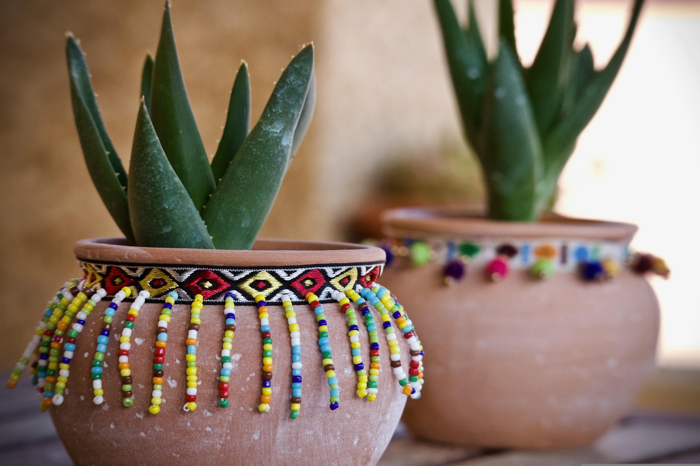
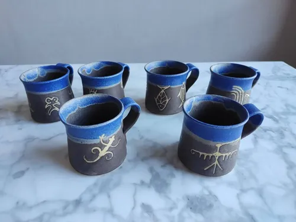
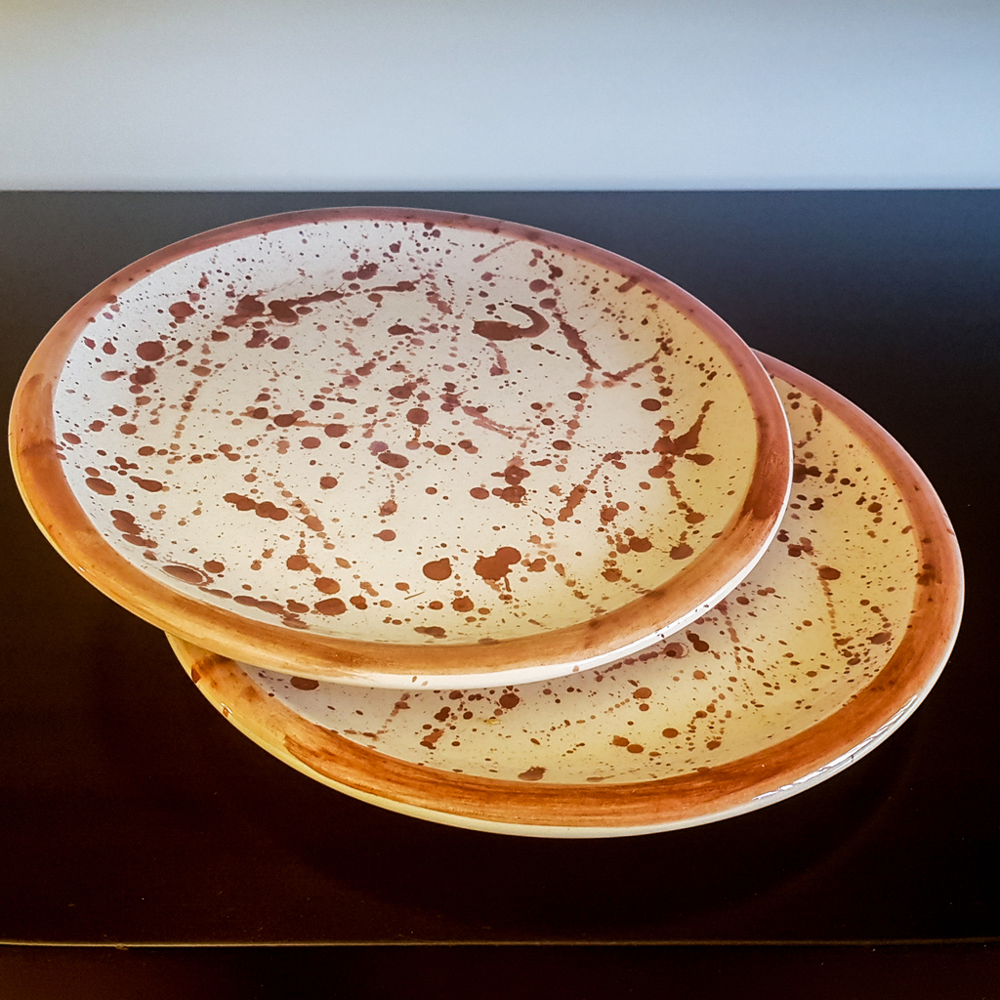

Catálogo
Cerámicas
Artículos de la categoría cerámicas. Usá “Saber más” para abrir la ficha informativa en PDF.
Catálogo
Artículos de la categoría cerámicas. Usá “Saber más” para abrir la ficha informativa en PDF.



Plato ornamental con detalles realizados a mano.
Saber más